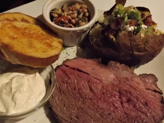

Christmas Prime Rib

Ingredients
- 1 (6 pound) boneless prime rib roast
- 2 tablespoons prepared horseradish
- 2 tablespoons Dijon mustard
- 2 teaspoons kosher salt
- 2 teaspoons coarsely ground black pepper
- 2 teaspoons dried thyme
- 2 teaspoons garlic powder
- 2 stalks celery, cut into 2-inch pieces
- 1 carrot, cut into 2-inch pieces
- 1 small unpeeled onion, quartered and separated